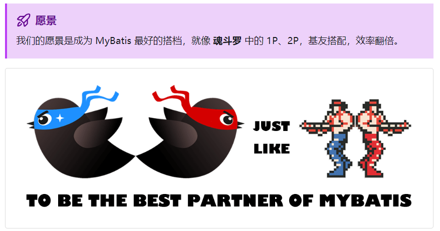
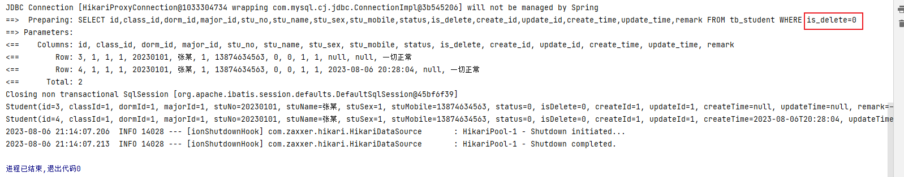
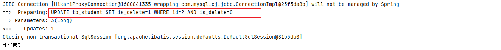

SpringBoot集成MyBatis-Plus
hexo template generate by typora plugin templater
使用Java开发Web应用与数据库交互是绕不开的话题，与数据库交互的技术包含最基础的JDBC，和在其上封装的框架如：Hibernate、MyBatis、JPA等，目前市场上使用较多的是MyBatis，而MyBatis-Plus是在其基础上的进一步增强，来简化MyBatis使用提高开发效率，还增强了一部分功能，详细信息可以移步【MyBatis-Plus官网】。本文档讲解内容如下：
- MyBatis-Plus快速使用
- 条件构造器
- 逻辑删除，主键生成策略，乐观锁插件
- 多表查询
- 多数据源
简介
MyBatis-Plus 是一个 MyBatis 的增强工具，在 MyBatis 的基础上只做增强不做改变，为简化开发、提高效率而生。

特性
- 无侵入：只做增强不做改变，引入它不会对现有工程产生影响，MyBatis可照常使用
- 损耗小：启动即会自动注入基本 CURD，性能基本无损耗，直接面向对象操作
- 强大的 CRUD 操作：内置通用 Mapper、通用 Service，仅仅通过少量配置即可实现单表大部分 CRUD 操作，更有强大的条件构造器，满足各类使用需求
- 支持 Lambda 形式调用：通过 Lambda 表达式，方便的编写各类查询条件，无需再担心字段写错
- 支持主键自动生成：支持多达 4 种主键策略（内含分布式唯一 ID 生成器 - Sequence），可自由配置，完美解决主键问题
- 支持 ActiveRecord 模式：支持 ActiveRecord 形式调用，实体类只需继承 Model 类即可进行强大的 CRUD 操作
- 支持自定义全局通用操作：支持全局通用方法注入（ Write once, use anywhere ）
- 内置代码生成器：采用代码或者 Maven 插件可快速生成 Mapper 、 Model 、 Service 、 Controller 层代码，支持模板引擎，更有超多自定义配置等您来使用
- 内置分页插件：基于 MyBatis 物理分页，开发者无需关心具体操作，配置好插件之后，写分页等同于普通 List 查询
- 分页插件支持多种数据库：支持 MySQL、MariaDB、Oracle、DB2、H2、HSQL、SQLite、Postgre、SQLServer 等多种数据库
- 内置性能分析插件：可输出 SQL 语句以及其执行时间，建议开发测试时启用该功能，能快速揪出慢查询
- 内置全局拦截插件：提供全表 delete 、 update 操作智能分析阻断，也可自定义拦截规则，预防误操作
支持的数据库
准备环境
在介绍mybatis-plus逻辑删除和自动填充时首先搭建项目和准备一张数据表，此案例通过springboot+mysql+mybatis-plus实现
创建数据表
1
2
3
4
5
6
7
8
9
10
11
12
13
14
15
16
17
18
| CREATE TABLE `tb_student` (
`id` bigint(11) NOT NULL AUTO_INCREMENT COMMENT '学生ID',
`class_id` int(11) NOT NULL COMMENT '班级编号',
`dorm_id` int(11) DEFAULT NULL COMMENT '宿舍编号',
`major_id` int(11) DEFAULT NULL COMMENT '专业id',
`stu_no` varchar(50) NOT NULL COMMENT '学号',
`stu_name` varchar(50) NOT NULL COMMENT '学生姓名',
`stu_sex` char(1) NOT NULL DEFAULT '0' COMMENT '用户性别（0男 1女 2未知）',
`stu_mobile` varchar(20) DEFAULT NULL COMMENT '手机号',
`status` char(1) NOT NULL COMMENT '学生状态（0正常 1请假 2休学 3退学 4毕业）',
`is_delete` BINARY(1) DEFAULT '0' COMMENT '删除标志（0未删除 1已删除）',
`create_id` bigint(11) not null COMMENT '创建者',
`update_id` bigint(63) not null COMMENT '修改者',
`create_time` datetime DEFAULT NULL COMMENT '创建时间',
`update_time` datetime DEFAULT NULL COMMENT '更新时间',
`remark` varchar(500) DEFAULT NULL COMMENT '备注',
PRIMARY KEY (`id`) USING BTREE
) ENGINE=InnoDB AUTO_INCREMENT=1 DEFAULT CHARSET=utf8mb4 ROW_FORMAT=DYNAMIC COMMENT='学生信息记录';
|
创建maven项目
在IDEA中创建一个maven项目，引入springboot、mysql、mybatis-plus依赖即可
1
2
3
4
5
6
7
8
9
10
11
12
13
14
15
16
17
18
19
20
21
22
23
24
25
26
27
28
29
30
31
32
33
34
35
36
37
38
39
40
41
42
| <?xml version="1.0" encoding="UTF-8"?>
<project xmlns="http://maven.apache.org/POM/4.0.0"
xmlns:xsi="http://www.w3.org/2001/XMLSchema-instance"
xsi:schemaLocation="http://maven.apache.org/POM/4.0.0 http://maven.apache.org/xsd/maven-4.0.0.xsd">
<modelVersion>4.0.0</modelVersion>
<parent>
<artifactId>spring-boot-starter-parent</artifactId>
<groupId>org.springframework.boot</groupId>
<version>2.7.12</version>
</parent>
<groupId>com.stt</groupId>
<artifactId>stt-mybatis-plus</artifactId>
<version>1.0-SNAPSHOT</version>
<description>Mybatis-plus技术栈</description>
<dependencies>
<dependency>
<groupId>org.springframework.boot</groupId>
<artifactId>spring-boot-starter-test</artifactId>
<version>2.7.12</version>
<scope>test</scope>
</dependency>
<dependency>
<groupId>mysql</groupId>
<artifactId>mysql-connector-java</artifactId>
<version>8.0.32</version>
</dependency>
<dependency>
<groupId>com.baomidou</groupId>
<artifactId>mybatis-plus-boot-starter</artifactId>
<version>3.5.3.1</version>
</dependency>
<dependency>
<groupId>org.projectlombok</groupId>
<artifactId>lombok</artifactId>
<version>1.18.26</version>
</dependency>
</dependencies>
</project>
|
application.yml配置文件
在springboot配置文件中配置数据库
1
2
3
4
5
6
7
8
9
10
11
12
|
spring:
datasource:
driver-class-name: com.mysql.cj.jdbc.Driver
url: jdbc:mysql://localhost:3306/mybatis-plus?useUnicode=true&characterEncoding=utf8&zeroDateTimeBehavior=convertToNull&useSSL=false&serverTimezone=GMT%2B8&allowMultiQueries=true
username: root
password: Shitian123456
mybatis-plus:
configuration:
log-impl: org.apache.ibatis.logging.stdout.StdOutImpl
|
创建实体类
1
2
3
4
5
6
7
8
9
10
11
12
13
14
15
16
17
18
19
20
21
22
23
24
25
26
27
28
29
30
31
32
33
34
| package com.stt.entity;
import com.baomidou.mybatisplus.annotation.*;
import lombok.Data;
import java.io.Serializable;
import java.time.LocalDateTime;
@Data
@TableName(value = "tb_student")
public class Student implements Serializable {
@TableId(type = IdType.AUTO)
private Long id;
private Integer classId;
private Integer dormId;
private Integer majorId;
private String stuNo;
private String stuName;
private Integer stuSex;
private String stuMobile;
private Integer status;
private Integer isDelete;
private Long createId;
private Long updateId;
private LocalDateTime createTime;
private LocalDateTime updateTime;
private String remark;
}
|
创建Mapper
Mapper接口
1
2
| public interface StudentMapper extends BaseMapper<Student> {
}
|
Mapper映射文件
1
2
3
4
5
| <?xml version="1.0" encoding="UTF-8"?>
<!DOCTYPE mapper PUBLIC "-//mybatis.org//DTD Mapper 3.0//EN" "http://mybatis.org/dtd/mybatis-3-mapper.dtd">
<mapper namespace="com.stt.mapper.StudentMapper">
</mapper>
|
创建Service
service接口
1
2
| public interface IStudentService extends IService<Student> {
}
|
service实现类
1
2
3
4
| @Service
public class StudentServiceImpl extends ServiceImpl<StudentMapper, Student> implements IStudentService {
}
|
springboot项目主类
在该类中注上mapper扫描
1
2
3
4
5
6
7
8
9
| @SpringBootApplication
@MapperScan("com.stt.mapper")
public class MyBatisPlusApplication {
public static void main(String[] args) {
SpringApplication.run(MyBatisPlusApplication.class,args);
}
}
|
此时准备工作完成，即创建数据表和springboot项目
逻辑删除
逻辑删除是为了方便数据恢复和保护数据潜在价值的一种手段，即当用户不需要某一个数据时就希望删除掉，此时有物理删除和逻辑删除两种方案。
- 物理删除：将数据真实的从数据库【磁盘】中删除掉
- 逻辑删除：数据并没有真正删除，还在数据库【磁盘】上个保存，只是在查询时过滤掉被删除的数据，对用户来说就是删除掉了
实现原理
物理删除通知数据库执行删除操作。即删除的sql
1
2
|
DELETE FROM tb_student WHERE id = 1
|
逻辑删除的实现方式是在数据表中添加一个是否删除字段，注意该字段不要和数据的状态字段耦合，比如学生有很多状态：正常，请假，休学，退学。可以使用status字段表示，而该学生被删除，则可以使用is_delete字段表示，我们暂定0为未删除，1为删除，那么在删除数据时其实就是修改该字段的值了
1
| UPDATE tb_student set is_delete = 1 WHERE id = 2;
|
在查询时，就需要带上is_delete字段作为判断条件
1
2
|
SELECT * FROM tb_student WHERE is_delete = 0;
|
在项目中实现原理相同，此时发现一个不方便的问题就是在查询时都要带上is_delete = 0的判断，删除的话修改该字段的值，mybatis-plus提供了逻辑删除的机制
查询：自动追加is_delete = 0的条件，过滤掉已被删除的数据
修改：修改时也会追加is_delete = 0的条件，防止修改已被删除的数据
删除：将删除变为update语句，语句同上述逻辑删除sql
使用方法
使用方法有两种方式，但都需要保障一个前提：
- 保障数据表中有一个字段标识该数据是否删除，类型无所谓【推荐使用Integer、Boolean】类型，官方还推荐使用LocalDateTime，emmm~~~~
实现方式：
- 在实体类中的对应字段上添加@TableLogic注解
- 或者 在application.yml中配置mybatis-plus的逻辑删除
此时数据表和实体类中都已经有一个名为is_delete的字段标识是否删除，当然该字段的名字你可以任意取名，下边就从第二步开始
@TableLogic注解
在实体类中的isDelete字段上添加该注解，该注解有两个属性，意义如下
- value：表示未删除的值，0代表如果值为0则是没有删除
- delval：表示已删除的值，1代表该数据已删除
1
2
| @TableLogic(value = "0",delval = "1")
private Integer isDelete;
|
查询测试
1
2
3
4
5
| @Test
public void search() {
List<Student> list = studentService.list();
list.forEach(System.out::println);
}
|
执行执行，发现控制台输出的sql中自动拼接上where条件

删除测试
1
2
3
4
5
6
| @Test
public void remove() {
boolean remove = studentService.removeById(3L);
if(remove) System.out.println("删除成功");
else System.out.println("删除失败");
}
|
此时的删除sql就变成了update

application配置方式
还有一种方式就是不使用注解，在application.yml文件中配置
1
2
3
4
5
6
7
8
9
10
|
mybatis-plus:
configuration:
log-impl: org.apache.ibatis.logging.stdout.StdOutImpl
global-config:
db-config:
logic-delete-field: isDelete
logic-delete-value: 1
logic-not-delete-value: 0
|
两种效果相同，不过推荐使用配置文件的方式，好处在于全局共用，即不需要每个实体类中都在isDelete属性上写@TableLogic注解，前提是你的项目中的逻辑删除规则是一样的哦
注意
也不是说项目中都要使用逻辑删除，是需求而定，逻辑删除有一个致命缺陷在于如果数据量剧增，mysql在单表数据达到300万以上时查询性能就会明显下降，此时可以将逻辑删除的数据统一迁移到另一个表中存储，正常的业务还是使用原表，如果需要用到原来被删除的数据，则可以到另一张表中查询。